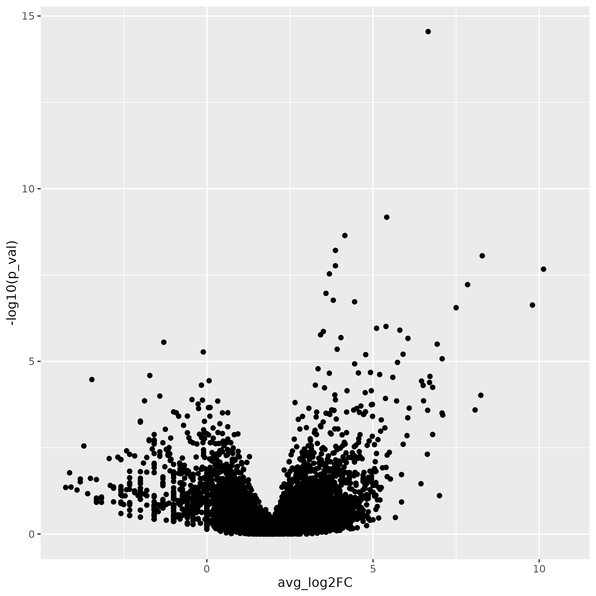

Introduction
Differential expression comparison is a key step to addressing the
biological question at hand for the experiment, namely what genes might
be contributing to the aberrant bone formation during healing that was
observed in this experiment.
As a reminder, our data includes cells isolated from issue from day 0
(prior to injury) as controls, and days 7 and 21 post-injury as
experimental conditions.

We already introduced DE comparisons in the marker identification section of this
workshop, but here we will show how to run comparisons between
experimental conditions for each annotated cluster.
Objectives
- Run cell-level differential expression comparisons
- Run sample level differential expression comparisons
Differential Expression
For single-cell data there are generally two types approaches for
running differential expression - either a cell-level or sample-level
approach.
For cell-level comparisons, simpler statistical methods like a t-test
or the Wilcoxon rank-sum test or single-cell specific methods that
models cells individually like MAST can be
used.
As mentioned earlier, many of the tools developed for bulk RNA-seq
have been shown to have good performance for single-cell data, such as
EdgeR or DESeq2, particularly when the count data is aggregated into
sample-level “pseudobulk” values for each cluster source.
As discussed in the single-cell
best practices book and in the Ouyang
Lab’s marker gene identification materials, there are active
benchmarking efforts and threshold considerations for single-cell
data.
Standard comparisons
First we’ll run cell-level comparisons for our data for the monocyte
cluster, starting with cells from the D21 vs D0 conditions. We’ll need
to ensure our cells are labeled to reflect both the cluster and
condition identities before running our comparison using
FindMarker() and summarizing the results:
# set up combined label of day + celltype & assign as identities
geo_so$day.celltype = paste(geo_so$day, geo_so$cell_type, sep = '_')
Idents(geo_so) = 'day.celltype'
# run comparison for D21 vs D0, using wilcoxon test
de_cell_monocytes_D21_vs_D0 = FindMarkers(
object = geo_so,
slot = 'data', test = 'wilcox',
ident.1 = 'Day21_Monocyte', ident.2 = 'Day0_Monocyte')
# summarize our results
table(de_cell_monocytes_D21_vs_D0$p_val_adj < 0.05 & abs(de_cell_monocytes_D21_vs_D0$avg_log2FC) > 1.5)
write_csv(de_cell_monocytes_D21_vs_D0, file = 'results/tables/de_standard_monocytes_D21_vs_D0.csv')
FALSE TRUE
10890 10
Note - the avg_log2FC threshold of 1.5 we use here are
quite stringent as the default log2FC threshold for the function is
0.25. However the default threshold corresponds to only a 19% difference
in RNA levels, which is quite permissive.
If there is enough time - we can also compare between cells from the
D7 and D0 conditions.
# run comparison for D7 vs D0, using wilcoxon test
de_cell_monocytes_D7_vs_D0 = FindMarkers(
object = geo_so,
slot = 'data', test = 'wilcox',
ident.1 = 'Day7_Monocyte', ident.2 = 'Day0_Monocyte')
# summarize results
table(de_cell_monocytes_D7_vs_D0$p_val_adj < 0.05 & abs(de_cell_monocytes_D7_vs_D0$avg_log2FC) > 1.5)
FALSE TRUE
10571 333
This same approach can be extended to run pairwise comparisons
between conditions for each annotated cluster.
Pseudobulk comparisons
With advances in the technology as well as decreased sequencing costs
allowing for larger scale single-cell experiments (that include
replicates), along with a study by Squair et al
(2021) that highlighted the possibility of inflated false discovery
rates for the cell-level approaches since cells isolated from the same
sample are unlikely to be statistically independent source
the use of sample-level or “psuedobulk” can be advantageous.
We’ll run psuedobulk comparisons for our data for the monocyte
cluster, starting with the D21 vs D0 conditions. We’ll need to generate
the aggregated counts first (ensuring that we are grouping cells by
replicate labels), before labeling the cells to reflect the cluster and
condition. Then we will run our comparison using
FindMarker() but specifying DESeq2 as our method before
summarizing the results:
# Create pseudobulk
pseudo_catch_so = AggregateExpression(geo_so, assays = 'RNA', return.seurat = TRUE, group.by = c('cell_type', 'day', 'replicate'))
# Set up labels to use for comparisons & assign as cell identities
pseudo_catch_so$day.celltype = paste(pseudo_catch_so$day, pseudo_catch_so$cell_type, sep = '_')
Idents(pseudo_catch_so) = 'day.celltype'
# Run pseudobulk comparison between Day 21 and Day 0, using DESeq2
de_pseudo_monocytes_D21_vs_D0 = FindMarkers(
object = pseudo_catch_so,
ident.1 = 'Day21_Monocyte', ident.2 = 'Day0_Monocyte',
test.use = 'DESeq2')
# look at results, using the same thresholds
table(de_pseudo_monocytes_D21_vs_D0$p_val_adj < 0.05 & abs(de_pseudo_monocytes_D21_vs_D0$avg_log2FC) > 1.5)
# output results
write_csv(de_pseudo_monocytes_D21_vs_D0, file = 'results/tables/de_pseudo_monocytes_D21_vs_D0.csv')
FALSE TRUE
14467 19
Since we’re working with pseudobulk data, unlike in the marker
identification section, there is no percentage of cells expressing to
need to represent so we can summarize our DE results with a volcano
plot:
pseudo_monocytes_D21_vs_D0_volcano = ggplot(de_pseudo_monocytes_D21_vs_D0, aes(x = avg_log2FC, y = -log10(p_val))) + geom_point()
pseudo_monocytes_D21_vs_D0_volcano
ggsave(filename = 'results/figures/volcano_de_pseudo_monocytes_D21_vs_D0.png', plot = pseudo_monocytes_D21_vs_D0_volcano, width = 7, height = 7, units = 'in')

Figure: D21 vs D0 pseudobulk volcano plot
Summary
Reviewing these results should allow us to identify genes of interest
that are impacted by injury and in the context of the cell-types in
which they are differentially expressed, formalize some hypotheses for
what cell-types or biological processes might be contributing to
aberrant bone formation.
These materials have been adapted and extended from materials listed
above. These are open access materials distributed under the terms of
the Creative
Commons Attribution license (CC BY 4.0), which permits unrestricted
use, distribution, and reproduction in any medium, provided the original
author and source are credited.
LS0tCnRpdGxlOiAiRGlmZmVyZW50aWFsIEV4cHJlc3Npb24gQW5hbHlzaXMiCmF1dGhvcjogIlVNIEJpb2luZm9ybWF0aWNzIENvcmUiCmRhdGU6ICJgciBTeXMuRGF0ZSgpYCIKb3V0cHV0OgogICAgICAgIGh0bWxfZG9jdW1lbnQ6CiAgICAgICAgICAgIGluY2x1ZGVzOgogICAgICAgICAgICAgICAgaW5faGVhZGVyOiBoZWFkZXIuaHRtbAogICAgICAgICAgICB0aGVtZTogcGFwZXIKICAgICAgICAgICAgdG9jOiB0cnVlCiAgICAgICAgICAgIHRvY19kZXB0aDogNAogICAgICAgICAgICB0b2NfZmxvYXQ6IHRydWUKICAgICAgICAgICAgbnVtYmVyX3NlY3Rpb25zOiBmYWxzZQogICAgICAgICAgICBmaWdfY2FwdGlvbjogdHJ1ZQogICAgICAgICAgICBtYXJrZG93bjogR0ZNCiAgICAgICAgICAgIGNvZGVfZG93bmxvYWQ6IHRydWUKLS0tCgo8c3R5bGUgdHlwZT0idGV4dC9jc3MiPgpib2R5LCB0ZCB7CiAgIGZvbnQtc2l6ZTogMThweDsKfQpjb2RlLnJ7CiAgZm9udC1zaXplOiAxMnB4Owp9CnByZSB7CiAgZm9udC1zaXplOiAxMnB4Cn0KPC9zdHlsZT4KCmBgYHtyLCBpbmNsdWRlID0gRkFMU0V9CnNvdXJjZSgiLi4vYmluL2NodW5rLW9wdGlvbnMuUiIpCmtuaXRyX2ZpZ19wYXRoKCJYWCIpCmBgYAoKIyBXb3JrZmxvdyBPdmVydmlldyB7LnVubGlzdGVkIC51bm51bWJlcmVkfQoKPGJyLz4KPGltZyBzcmM9ImltYWdlcy93YXlmaW5kZXIvd2F5ZmluZGVyLnBuZyIgYWx0PSJ3YXlmaW5kZXIiIHN0eWxlPSJoZWlnaHQ6IDQwMHB4OyIvPgo8YnIvPgo8YnIvPgoKIyBJbnRyb2R1Y3Rpb24KCkRpZmZlcmVudGlhbCBleHByZXNzaW9uIGNvbXBhcmlzb24gaXMgYSBrZXkgc3RlcCB0byBhZGRyZXNzaW5nIHRoZSBiaW9sb2dpY2FsIHF1ZXN0aW9uIGF0IGhhbmQgZm9yIHRoZSBleHBlcmltZW50LCBuYW1lbHkgd2hhdCBnZW5lcyBtaWdodCBiZSBjb250cmlidXRpbmcgdG8gdGhlIGFiZXJyYW50IGJvbmUgZm9ybWF0aW9uIGR1cmluZyBoZWFsaW5nIHRoYXQgd2FzIG9ic2VydmVkIGluIHRoaXMgZXhwZXJpbWVudC4KCkFzIGEgcmVtaW5kZXIsIG91ciBkYXRhIGluY2x1ZGVzIGNlbGxzIGlzb2xhdGVkIGZyb20gaXNzdWUgZnJvbSBkYXkgMCAocHJpb3IgdG8gaW5qdXJ5KSBhcyBjb250cm9scywgYW5kIGRheXMgNyBhbmQgMjEgcG9zdC1pbmp1cnkgYXMgZXhwZXJpbWVudGFsIGNvbmRpdGlvbnMuCgohW10oLi9pbWFnZXMvY3VycmljdWx1bS9leHBlcmltZW50YWxfZGVzaWduLmpwZykKCldlIGFscmVhZHkgaW50cm9kdWNlZCBERSBjb21wYXJpc29ucyBpbiB0aGUgW21hcmtlciBpZGVudGlmaWNhdGlvbiBzZWN0aW9uIG9mIHRoaXMgd29ya3Nob3BdKDA2LU1hcmtlclZpc3VhbGl6YXRpb24uaHRtbCksIGJ1dCBoZXJlIHdlIHdpbGwgc2hvdyBob3cgdG8gcnVuIGNvbXBhcmlzb25zIGJldHdlZW4gZXhwZXJpbWVudGFsIGNvbmRpdGlvbnMgZm9yIGVhY2ggYW5ub3RhdGVkIGNsdXN0ZXIuCgojIyBPYmplY3RpdmVzCgo8IS0tQWRkIHNwZWNpZmljIGdvYWxzIGZvciBzZWN0aW9uLS0+Ci0gUnVuIGNlbGwtbGV2ZWwgZGlmZmVyZW50aWFsIGV4cHJlc3Npb24gY29tcGFyaXNvbnMKLSBSdW4gc2FtcGxlIGxldmVsIGRpZmZlcmVudGlhbCBleHByZXNzaW9uIGNvbXBhcmlzb25zCgotLS0tCgojIERpZmZlcmVudGlhbCBFeHByZXNzaW9uCgpGb3Igc2luZ2xlLWNlbGwgZGF0YSB0aGVyZSBhcmUgZ2VuZXJhbGx5IHR3byB0eXBlcyBhcHByb2FjaGVzIGZvciBydW5uaW5nIGRpZmZlcmVudGlhbCBleHByZXNzaW9uIC0gZWl0aGVyIGEgY2VsbC1sZXZlbCBvciBzYW1wbGUtbGV2ZWwgYXBwcm9hY2guIAoKRm9yIGNlbGwtbGV2ZWwgY29tcGFyaXNvbnMsIHNpbXBsZXIgc3RhdGlzdGljYWwgbWV0aG9kcyBsaWtlIGEgdC10ZXN0IG9yIHRoZSBXaWxjb3hvbiByYW5rLXN1bSB0ZXN0IG9yIHNpbmdsZS1jZWxsIHNwZWNpZmljIG1ldGhvZHMgdGhhdCBtb2RlbHMgY2VsbHMgaW5kaXZpZHVhbGx5IGxpa2UgW01BU1RdKGh0dHBzOi8vZG9pLm9yZy8xMC4xMTg2L3MxMzA1OS0wMTUtMDg0NC01KSBjYW4gYmUgdXNlZC4gCgpBcyBtZW50aW9uZWQgZWFybGllciwgbWFueSBvZiB0aGUgdG9vbHMgZGV2ZWxvcGVkIGZvciBidWxrIFJOQS1zZXEgaGF2ZSBiZWVuIHNob3duIHRvIGhhdmUgZ29vZCBwZXJmb3JtYW5jZSBmb3Igc2luZ2xlLWNlbGwgZGF0YSwgc3VjaCBhcyBFZGdlUiBvciBERVNlcTIsIHBhcnRpY3VsYXJseSB3aGVuIHRoZSBjb3VudCBkYXRhIGlzIGFnZ3JlZ2F0ZWQgaW50byBzYW1wbGUtbGV2ZWwgInBzZXVkb2J1bGsiIHZhbHVlcyBmb3IgZWFjaCBjbHVzdGVyIFtzb3VyY2VdKGh0dHBzOi8vd3d3LnNjLWJlc3QtcHJhY3RpY2VzLm9yZy9jb25kaXRpb25zL2RpZmZlcmVudGlhbF9nZW5lX2V4cHJlc3Npb24uaHRtbCkuIAoKQXMgZGlzY3Vzc2VkIGluIHRoZSBbc2luZ2xlLWNlbGwgYmVzdCBwcmFjdGljZXMgYm9va10oaHR0cHM6Ly93d3cuc2MtYmVzdC1wcmFjdGljZXMub3JnL2NvbmRpdGlvbnMvZGlmZmVyZW50aWFsX2dlbmVfZXhwcmVzc2lvbi5odG1sKSBhbmQgaW4gdGhlIFtPdXlhbmcgTGFiJ3MgbWFya2VyIGdlbmUgaWRlbnRpZmljYXRpb24gbWF0ZXJpYWxzXShodHRwczovL291eWFuZ2xhYi5jb20vc2luZ2xlY2VsbC9jbHVzdC5odG1sI3NlYzpkaWZmZXhwciksIHRoZXJlIGFyZSBhY3RpdmUgYmVuY2htYXJraW5nIGVmZm9ydHMgYW5kIHRocmVzaG9sZCBjb25zaWRlcmF0aW9ucyBmb3Igc2luZ2xlLWNlbGwgZGF0YS4KCjwhLS0gYWRkIG1vcmUgaW4gZGVwdGggbW9kZWwgY29tcGFyaXNvbnMgb3B0aW9ucyBsYXRlcj8KIyMgTW9kZWwgb3B0aW9ucwoKV2lsY294aW4gKGRlZmF1bHQpLCBERVNlcTIsIE1BU1QsIGV0Yy4KLS0+CgojIyBTdGFuZGFyZCBjb21wYXJpc29ucwoKRmlyc3Qgd2UnbGwgcnVuIGNlbGwtbGV2ZWwgY29tcGFyaXNvbnMgZm9yIG91ciBkYXRhIGZvciB0aGUgbW9ub2N5dGUgY2x1c3Rlciwgc3RhcnRpbmcgd2l0aCBjZWxscyBmcm9tIHRoZSBEMjEgdnMgRDAgY29uZGl0aW9ucy4gV2UnbGwgbmVlZCB0byBlbnN1cmUgb3VyIGNlbGxzIGFyZSBsYWJlbGVkIHRvIHJlZmxlY3QgYm90aCB0aGUgY2x1c3RlciBhbmQgY29uZGl0aW9uIGlkZW50aXRpZXMgYmVmb3JlIHJ1bm5pbmcgb3VyIGNvbXBhcmlzb24gdXNpbmcgYEZpbmRNYXJrZXIoKWAgYW5kIHN1bW1hcml6aW5nIHRoZSByZXN1bHRzOgoKPCEtLSBhZGQgVU1BUCB3aXRoIGZhY2V0cyBieSBncm91cHMgdG8gc2hvdyB3aGF0J3MgYmVpbmcgY29tcGFyZWQ/IC0tPgoKYGBge3IsIGV2YWw9RkFMU0V9CiMgc2V0IHVwIGNvbWJpbmVkIGxhYmVsIG9mIGRheSArIGNlbGx0eXBlICYgYXNzaWduIGFzIGlkZW50aXRpZXMKZ2VvX3NvJGRheS5jZWxsdHlwZSA9IHBhc3RlKGdlb19zbyRkYXksIGdlb19zbyRjZWxsX3R5cGUsIHNlcCA9ICdfJykKSWRlbnRzKGdlb19zbykgPSAnZGF5LmNlbGx0eXBlJwoKIyBydW4gY29tcGFyaXNvbiBmb3IgRDIxIHZzIEQwLCB1c2luZyB3aWxjb3hvbiB0ZXN0CmRlX2NlbGxfbW9ub2N5dGVzX0QyMV92c19EMCA9IEZpbmRNYXJrZXJzKAogICAgb2JqZWN0ID0gZ2VvX3NvLAogICAgc2xvdCA9ICdkYXRhJywgdGVzdCA9ICd3aWxjb3gnLAogICAgaWRlbnQuMSA9ICdEYXkyMV9Nb25vY3l0ZScsIGlkZW50LjIgPSAnRGF5MF9Nb25vY3l0ZScpCgojIHN1bW1hcml6ZSBvdXIgcmVzdWx0cwp0YWJsZShkZV9jZWxsX21vbm9jeXRlc19EMjFfdnNfRDAkcF92YWxfYWRqIDwgMC4wNSAmIGFicyhkZV9jZWxsX21vbm9jeXRlc19EMjFfdnNfRDAkYXZnX2xvZzJGQykgPiAxLjUpCgp3cml0ZV9jc3YoZGVfY2VsbF9tb25vY3l0ZXNfRDIxX3ZzX0QwLCBmaWxlID0gJ3Jlc3VsdHMvdGFibGVzL2RlX3N0YW5kYXJkX21vbm9jeXRlc19EMjFfdnNfRDAuY3N2JykKYGBgCn5+fgpGQUxTRSAgVFJVRSAKMTA4OTAgICAgMTAKfn5+CgpOb3RlIC0gdGhlIGBhdmdfbG9nMkZDYCB0aHJlc2hvbGQgb2YgMS41IHdlIHVzZSBoZXJlIGFyZSBxdWl0ZSBzdHJpbmdlbnQgYXMgdGhlIGRlZmF1bHQgbG9nMkZDIHRocmVzaG9sZCBmb3IgdGhlIGZ1bmN0aW9uIGlzIDAuMjUuIEhvd2V2ZXIgdGhlIGRlZmF1bHQgdGhyZXNob2xkIGNvcnJlc3BvbmRzIHRvIG9ubHkgYSAxOSUgZGlmZmVyZW5jZSBpbiBSTkEgbGV2ZWxzLCB3aGljaCBpcyBxdWl0ZSBwZXJtaXNzaXZlLiAKCklmIHRoZXJlIGlzIGVub3VnaCB0aW1lIC0gd2UgY2FuIGFsc28gY29tcGFyZSBiZXR3ZWVuIGNlbGxzIGZyb20gdGhlIEQ3IGFuZCBEMCBjb25kaXRpb25zLgpgYGB7ciwgZXZhbD1GQUxTRX0KIyBydW4gY29tcGFyaXNvbiBmb3IgRDcgdnMgRDAsIHVzaW5nIHdpbGNveG9uIHRlc3QKZGVfY2VsbF9tb25vY3l0ZXNfRDdfdnNfRDAgPSBGaW5kTWFya2VycygKICAgIG9iamVjdCA9IGdlb19zbywKICAgIHNsb3QgPSAnZGF0YScsIHRlc3QgPSAnd2lsY294JywKICAgIGlkZW50LjEgPSAnRGF5N19Nb25vY3l0ZScsIGlkZW50LjIgPSAnRGF5MF9Nb25vY3l0ZScpCgojIHN1bW1hcml6ZSByZXN1bHRzCnRhYmxlKGRlX2NlbGxfbW9ub2N5dGVzX0Q3X3ZzX0QwJHBfdmFsX2FkaiA8IDAuMDUgJiBhYnMoZGVfY2VsbF9tb25vY3l0ZXNfRDdfdnNfRDAkYXZnX2xvZzJGQykgPiAxLjUpCmBgYAp+fn4KRkFMU0UgIFRSVUUgCjEwNTcxICAgMzMzCn5+fgoKVGhpcyBzYW1lIGFwcHJvYWNoIGNhbiBiZSBleHRlbmRlZCB0byBydW4gcGFpcndpc2UgY29tcGFyaXNvbnMgYmV0d2VlbiBjb25kaXRpb25zIGZvciBlYWNoIGFubm90YXRlZCBjbHVzdGVyLgoKPCEtLSBhZGQgY29kZSB0byBsb29wIHRocm91Z2ggYWxsIGNsdXN0ZXJzIGFuZCBnZW5lcmF0ZSBjb21wYXJpc29ucyAtLT4KCiMjIFBzZXVkb2J1bGsgY29tcGFyaXNvbnMKCjwhLS0gWzEweCBhbmFseXNpcyBndWlkZSBmb3IgZGlmZmVyZW50aWFsIGV4cHJlc3Npb24gd2l0aCBiaW9sb2dpY2FsIHJlcGxpY2F0ZXNdKGh0dHBzOi8vd3d3LjEweGdlbm9taWNzLmNvbS9hbmFseXNpcy1ndWlkZXMvZGlmZmVyZW50aWFsLWdlbmUtZXhwcmVzc2lvbi1hbmFseXNpcy1pbi1zY3JuYS1zZXEtZGF0YS1iZXR3ZWVuLWNvbmRpdGlvbnMtd2l0aC1iaW9sb2dpY2FsLXJlcGxpY2F0ZXMpIC0tPgoKPCEtLSBbT3V5YW5nXShodHRwczovL291eWFuZ2xhYi5jb20vc2luZ2xlY2VsbC9jbHVzdC5odG1sI3NlYzpkaWZmZXhwcikgRm9yIChpaSksIHNpbmdsZS1jZWxsIHN0dWRpZXMgYXJlIG5vdyBtb3JlIGNvbXBsZXgsIG9mdGVuIGluY2x1ZGluZyBzYW1wbGVzIGZyb20gbXVsdGlwbGUgZG9ub3JzLiBJdCBpcyBwb3NzaWJsZSB0aGF0IHRoZXJlIGFyZSBtb3JlIGNlbGxzIGJlaW5nIHByb2ZpbGVkIGZyb20gYSBzcGVjaWZpYyBkb25vciB0aGFuIG90aGVycyBhbmQgdGhpcyBjYW4gc2tldyB0aGUgREUgcmVzdWx0cy4gRm9yIGV4YW1wbGUsIGNvbnNpZGVyIGEgc3R1ZHkgd2hlcmUgdGhlcmUgYXJlIHRocmVlIGRpc2Vhc2VkIHNhbXBsZXMgKEQxLEQyLEQzKSBhbmQgdGhyZWUgaGVhbHRoeSBzYW1wbGVzIChIMSxIMixIM18gYW5kIHRoZXJlIGFyZSBhIGxvdCBtb3JlIGNlbGxzIGZyb20gc2FtcGxlIEQxLiBJbiB0aGlzIHNjZW5hcmlvLCBhIGdlbmUgdGhhdCBpcyBzcGVjaWZpY2FsbHkgZXhwcmVzc2VkIGluIEQxIG1heSBiZSBpZGVudGlmaWVkIGFzIGRpZmZlcmVudGlhbGx5IGV4cHJlc3NlZCB3aGVuIGNvbXBhcmluZyBkaXNlYXNlZCBhbmQgaGVhbHRoeSBzaW5nbGUtY2VsbHMuIEluIGZhY3QsIFNxdWFpciBldCBhbC4gaGF2ZSBzaG93biB0aGF0IGlnbm9yaW5nIGJpb2xvZ2ljYWwgcmVwbGljYXRlcyBjYW4gb2Z0ZW4gcmVzdWx0IGluIGZhbHNlIGRpc2NvdmVyaWVzIGluIHNpbmdsZS1jZWxsIERFIChTcXVhaXIgZXQgYWwuIDIwMjEpLiBUbyBjaXJjdW12ZW50IHRoaXMsIFNxdWFpciBldCBhbC4gc3VnZ2VzdGVkIHRoZSB1c2Ugb2YgcHNldWRvLWJ1bGsgcHJvZmlsZXMgd2hlcmUgdGhlIHNpbmdsZS1jZWxsIHByb2ZpbGVzIGZyb20gZWFjaCBpbmRpdmlkdWFsIGlzIGJlaW5nIGNvbGxlY3RlZCBhbmQgdGhlbiBzdWJqZWN0ZWQgdG8gYnVsayBSTkEtc2VxIGJhc2VkIERFIG1ldGhvZHMuIEFub3RoZXIgcG9zc2libGUgYXBwcm9hY2ggaXMgdG8gZG93bnNhbXBsZSB0aGUgbnVtYmVyIG9mIHNpbmdsZSBjZWxscyBzdWNoIHRoYXQgZWFjaCBpbmRpdmlkdWFsIGhhdmUgcm91Z2hseSBhIHNpbWlsYXIgbnVtYmVyIG9mIGNlbGxzLiAtLT4KCldpdGggYWR2YW5jZXMgaW4gdGhlIHRlY2hub2xvZ3kgYXMgd2VsbCBhcyBkZWNyZWFzZWQgc2VxdWVuY2luZyBjb3N0cyBhbGxvd2luZyBmb3IgbGFyZ2VyIHNjYWxlIHNpbmdsZS1jZWxsIGV4cGVyaW1lbnRzICh0aGF0IGluY2x1ZGUgcmVwbGljYXRlcyksIGFsb25nIHdpdGggYSBzdHVkeSBieSBbU3F1YWlyIGV0IGFsICgyMDIxKV0oaHR0cHM6Ly93d3cubmF0dXJlLmNvbS9hcnRpY2xlcy9zNDE0NjctMDIxLTI1OTYwLTIpIHRoYXQgaGlnaGxpZ2h0ZWQgdGhlIHBvc3NpYmlsaXR5IG9mIGluZmxhdGVkIGZhbHNlIGRpc2NvdmVyeSByYXRlcyBmb3IgdGhlIGNlbGwtbGV2ZWwgYXBwcm9hY2hlcyBzaW5jZSBjZWxscyBpc29sYXRlZCBmcm9tIHRoZSBzYW1lIHNhbXBsZSBhcmUgdW5saWtlbHkgdG8gYmUgc3RhdGlzdGljYWxseSBpbmRlcGVuZGVudCBbc291cmNlXShodHRwczovL3d3dy5zYy1iZXN0LXByYWN0aWNlcy5vcmcvY29uZGl0aW9ucy9kaWZmZXJlbnRpYWxfZ2VuZV9leHByZXNzaW9uLmh0bWwpIHRoZSB1c2Ugb2Ygc2FtcGxlLWxldmVsIG9yICJwc3VlZG9idWxrIiBjYW4gYmUgYWR2YW50YWdlb3VzLiAKCjwhLS0gYWRkIFVNQVAgd2l0aCBmYWNldHMgYnkgc2FtcGxlIHRvIHNob3cgd2hhdCdzIGJlaW5nIGNvbXBhcmVkPyAtLT4KCldlJ2xsIHJ1biBwc3VlZG9idWxrIGNvbXBhcmlzb25zIGZvciBvdXIgZGF0YSBmb3IgdGhlIG1vbm9jeXRlIGNsdXN0ZXIsIHN0YXJ0aW5nIHdpdGggdGhlIEQyMSB2cyBEMCBjb25kaXRpb25zLiBXZSdsbCBuZWVkIHRvIGdlbmVyYXRlIHRoZSBhZ2dyZWdhdGVkIGNvdW50cyBmaXJzdCAoZW5zdXJpbmcgdGhhdCB3ZSBhcmUgZ3JvdXBpbmcgY2VsbHMgYnkgcmVwbGljYXRlIGxhYmVscyksIGJlZm9yZSBsYWJlbGluZyB0aGUgY2VsbHMgdG8gcmVmbGVjdCB0aGUgY2x1c3RlciBhbmQgY29uZGl0aW9uLiBUaGVuIHdlIHdpbGwgcnVuIG91ciBjb21wYXJpc29uIHVzaW5nIGBGaW5kTWFya2VyKClgIGJ1dCBzcGVjaWZ5aW5nIERFU2VxMiBhcyBvdXIgbWV0aG9kIGJlZm9yZSBzdW1tYXJpemluZyB0aGUgcmVzdWx0czoKYGBge3IsIGV2YWw9RkFMU0V9CiMgQ3JlYXRlIHBzZXVkb2J1bGsgCnBzZXVkb19jYXRjaF9zbyA9IEFnZ3JlZ2F0ZUV4cHJlc3Npb24oZ2VvX3NvLCBhc3NheXMgPSAnUk5BJywgcmV0dXJuLnNldXJhdCA9IFRSVUUsIGdyb3VwLmJ5ID0gYygnY2VsbF90eXBlJywgJ2RheScsICdyZXBsaWNhdGUnKSkKCiMgU2V0IHVwIGxhYmVscyB0byB1c2UgZm9yIGNvbXBhcmlzb25zICYgYXNzaWduIGFzIGNlbGwgaWRlbnRpdGllcwpwc2V1ZG9fY2F0Y2hfc28kZGF5LmNlbGx0eXBlID0gcGFzdGUocHNldWRvX2NhdGNoX3NvJGRheSwgcHNldWRvX2NhdGNoX3NvJGNlbGxfdHlwZSwgc2VwID0gJ18nKQpJZGVudHMocHNldWRvX2NhdGNoX3NvKSA9ICdkYXkuY2VsbHR5cGUnCgojIFJ1biBwc2V1ZG9idWxrIGNvbXBhcmlzb24gYmV0d2VlbiBEYXkgMjEgYW5kIERheSAwLCB1c2luZyBERVNlcTIKZGVfcHNldWRvX21vbm9jeXRlc19EMjFfdnNfRDAgPSBGaW5kTWFya2VycygKICAgIG9iamVjdCA9IHBzZXVkb19jYXRjaF9zbywgCiAgICBpZGVudC4xID0gJ0RheTIxX01vbm9jeXRlJywgaWRlbnQuMiA9ICdEYXkwX01vbm9jeXRlJywgCiAgICB0ZXN0LnVzZSA9ICdERVNlcTInKQoKIyBsb29rIGF0IHJlc3VsdHMsIHVzaW5nIHRoZSBzYW1lIHRocmVzaG9sZHMKdGFibGUoZGVfcHNldWRvX21vbm9jeXRlc19EMjFfdnNfRDAkcF92YWxfYWRqIDwgMC4wNSAmIGFicyhkZV9wc2V1ZG9fbW9ub2N5dGVzX0QyMV92c19EMCRhdmdfbG9nMkZDKSA+IDEuNSkKCiMgb3V0cHV0IHJlc3VsdHMKd3JpdGVfY3N2KGRlX3BzZXVkb19tb25vY3l0ZXNfRDIxX3ZzX0QwLCBmaWxlID0gJ3Jlc3VsdHMvdGFibGVzL2RlX3BzZXVkb19tb25vY3l0ZXNfRDIxX3ZzX0QwLmNzdicpCmBgYAp+fn4KRkFMU0UgIFRSVUUgCjE0NDY3ICAgIDE5IAp+fn4KCgpTaW5jZSB3ZSdyZSB3b3JraW5nIHdpdGggcHNldWRvYnVsayBkYXRhLCB1bmxpa2UgaW4gdGhlIG1hcmtlciBpZGVudGlmaWNhdGlvbiBzZWN0aW9uLCB0aGVyZSBpcyBubyBwZXJjZW50YWdlIG9mIGNlbGxzIGV4cHJlc3NpbmcgdG8gbmVlZCB0byByZXByZXNlbnQgc28gd2UgY2FuIHN1bW1hcml6ZSBvdXIgREUgcmVzdWx0cyB3aXRoIGEgdm9sY2FubyBwbG90OgpgYGB7ciwgZXZhbD1GQUxTRX0KcHNldWRvX21vbm9jeXRlc19EMjFfdnNfRDBfdm9sY2FubyA9IGdncGxvdChkZV9wc2V1ZG9fbW9ub2N5dGVzX0QyMV92c19EMCwgYWVzKHggPSBhdmdfbG9nMkZDLCB5ID0gLWxvZzEwKHBfdmFsKSkpICsgZ2VvbV9wb2ludCgpCnBzZXVkb19tb25vY3l0ZXNfRDIxX3ZzX0QwX3ZvbGNhbm8KCmdnc2F2ZShmaWxlbmFtZSA9ICdyZXN1bHRzL2ZpZ3VyZXMvdm9sY2Fub19kZV9wc2V1ZG9fbW9ub2N5dGVzX0QyMV92c19EMC5wbmcnLCBwbG90ID0gcHNldWRvX21vbm9jeXRlc19EMjFfdnNfRDBfdm9sY2Fubywgd2lkdGggPSA3LCBoZWlnaHQgPSA3LCB1bml0cyA9ICdpbicpCmBgYAoKIVtGaWd1cmU6IEQyMSB2cyBEMCBwc2V1ZG9idWxrIHZvbGNhbm8gcGxvdF0oLi9pbWFnZXMvY3VycmljdWx1bS8wOC1EaWZmZXJlbnRpYWxFeHByZXNzaW9uL3ZvbGNhbm9fZGVfcHNldWRvX21vbm9jeXRlc19EMjFfdnNfRDAucG5nKSAgIAoKCjwhLS0tIAojIyMgSXRlcmF0aW5nIG92ZXIgYWxsIGNsdXN0ZXJzCgpBZGQgY29kZSB0byAKLS0tPgoKIyBEb3duc3RyZWFtIGFwcHJvYWNoZXMKCkJleW9uZCBkaWZmZXJlbnRpYWwgZXhwcmVzc2lvbiB3aXRoaW4gY2x1c3RlcnMsIHRoZXJlIGFyZSBtYW55IG90aGVyIHBvc3NpYmxlIGF2ZW51ZXMgb2YgZXhwbG9yYXRpb24gYW5kIGFuYWx5c2lzIGZvciBzY1JOQS1zZXEgZGF0YS4gSW5jbHVkaW5nLCBidXQgbm90IGxpbWl0ZWQgdG86CgotIEludGVncmF0aW9uIHdpdGggb3RoZXIgbW9kYWxpdGllcyAoZS5nLiBBVEFDLXNlcSwgVkRKLCBldGMuKQotIFN1YmNsdXN0ZXJpbmcgY2x1c3RlcnMgb2YgaW50ZXJlc3QsIHNlZSBbSEJDJ3Mgc3VtbWFyeSBvbiBzdWJjbHVzdGVyaW5nXShodHRwczovL2hiY3RyYWluaW5nLmdpdGh1Yi5pby9zY1JOQS1zZXFfb25saW5lL2xlc3NvbnMvc2V1cmF0X3N1YmNsdXN0ZXJpbmcuaHRtbCksIFtTZXVyYXQncyBmaW5kU3ViY0NsdXN0ZXIgZG9jdW1lbnRhdGlvbl0oaHR0cHM6Ly9zYXRpamFsYWIub3JnL3NldXJhdC9yZWZlcmVuY2UvZmluZHN1YmNsdXN0ZXIpIGFuZCBbdGhpcyByZWxhdGVkIGlzc3VlIHRocmVhZF0oaHR0cHM6Ly9naXRodWIuY29tL3NhdGlqYWxhYi9zZXVyYXQvaXNzdWVzLzE4ODMpICAKLSBUcmFqZWN0b3J5IG9yIFBzZXVkb3RpbWUgYW5hbHlzaXMsIHNlZVtPdXlhbmcgTGFiJ3MgdHJhamVjdG9yeSBhbmFseXNpc10oaHR0cHM6Ly9vdXlhbmdsYWIuY29tL3NpbmdsZWNlbGwvZGltcmQuaHRtbCkgb3IgW0Jyb2FkIEluc3RpdHV0ZSdzIG1hdGVyaWFscyBvbiB0cmFqZWN0b3J5IGFuYWx5c2lzXShodHRwczovL2Jyb2FkaW5zdGl0dXRlLmdpdGh1Yi5pby8yMDIwX3NjV29ya3Nob3AvdHJhamVjdG9yeS1hbmFseXNpcy5odG1sKSwgYW1vbmcgb3RoZXIgcmVzb3VyY2VzICAgIAotIENlbGwgLSBDZWxsIGNvbW11bmljYXRpb24gbmV0d29yayBpbmZlcmVuY2UsIHNlZSBbcmV2aWV3IGJ5IFdpbGsgZXQgYWwgKDIwMjMpXShodHRwczovL3d3dy5uYXR1cmUuY29tL2FydGljbGVzL3M0MTU4Ny0wMjMtMDE3ODIteikKLSBWZWxvY2l0eSBhbmFseXNpcyAobm90ZTogbm90IGNvbXBhdGlibGUgd2l0aCB0aGUgZmxleCBwcm9iZSBiYXNlZCBraXRzKSwgc2VlIFt0aGUgY2hhcHRlciBmcm9tIHRoZSBzaW5nbGUtY2VsbHMgYmVzdCBwcmFjdGljZXMgYm9va10oaHR0cHM6Ly93d3cuc2MtYmVzdC1wcmFjdGljZXMub3JnL3RyYWplY3Rvcmllcy9ybmFfdmVsb2NpdHkuaHRtbCkgZm9yIGRldGFpbGVkIHRoZW9yeS9tb2RlbGluZyBvciB0aGUgWzEweCBkYXRhIHZpZ25ldHRlIGZvciB2ZWxvY3l0b10oaHR0cHM6Ly9wa2xhYi5tZWQuaGFydmFyZC5lZHUvdmVsb2N5dG8vbm90ZWJvb2tzL1IvU0NHNzEubmIuaHRtbCkgZm9yIGEgcHJhY3RpY2FsIGV4YW1wbGUgaW4gUgoKCldlIHdvdWxkIHJlY29tbWVuZCBsb29raW5nIGZvciBzdHVkaWVzIGluIHNpbWlsYXIgdGlzc3VlcyBvciBleHBlcmltZW50YWwgcXVlc3Rpb25zIGFuZCBzZWUgd2hhdCBraW5kIG9mIGFwcHJvYWNoZXMgYW5kIHRvb2xzIHdlcmUgdXNlZCB0byBhbnN3ZXIgcXVlc3Rpb25zIHJlbGF0ZWQgdG8geW91ciBiaW9sb2dpY2FsIHF1ZXN0aW9uCgojIFN1bW1hcnkKClJldmlld2luZyB0aGVzZSByZXN1bHRzIHNob3VsZCBhbGxvdyB1cyB0byBpZGVudGlmeSBnZW5lcyBvZiBpbnRlcmVzdCB0aGF0IGFyZSBpbXBhY3RlZCBieSBpbmp1cnkgYW5kIGluIHRoZSBjb250ZXh0IG9mIHRoZSBjZWxsLXR5cGVzIGluIHdoaWNoIHRoZXkgYXJlIGRpZmZlcmVudGlhbGx5IGV4cHJlc3NlZCwgZm9ybWFsaXplIHNvbWUgaHlwb3RoZXNlcyBmb3Igd2hhdCBjZWxsLXR5cGVzIG9yIGJpb2xvZ2ljYWwgcHJvY2Vzc2VzIG1pZ2h0IGJlIGNvbnRyaWJ1dGluZyB0byBhYmVycmFudCBib25lIGZvcm1hdGlvbi4gCgoKCgoKLS0tLQoKVGhlc2UgbWF0ZXJpYWxzIGhhdmUgYmVlbiBhZGFwdGVkIGFuZCBleHRlbmRlZCBmcm9tIG1hdGVyaWFscyBsaXN0ZWQgYWJvdmUuIFRoZXNlIGFyZSBvcGVuIGFjY2VzcyBtYXRlcmlhbHMgZGlzdHJpYnV0ZWQgdW5kZXIgdGhlIHRlcm1zIG9mIHRoZSBbQ3JlYXRpdmUgQ29tbW9ucyBBdHRyaWJ1dGlvbiBsaWNlbnNlIChDQyBCWSA0LjApXShodHRwOi8vY3JlYXRpdmVjb21tb25zLm9yZy9saWNlbnNlcy9ieS80LjAvKSwgd2hpY2ggcGVybWl0cyB1bnJlc3RyaWN0ZWQgdXNlLCBkaXN0cmlidXRpb24sIGFuZCByZXByb2R1Y3Rpb24gaW4gYW55IG1lZGl1bSwgcHJvdmlkZWQgdGhlIG9yaWdpbmFsIGF1dGhvciBhbmQgc291cmNlIGFyZSBjcmVkaXRlZC4KCjxici8+Cjxici8+Cjxoci8+CnwgW1ByZXZpb3VzIGxlc3Nvbl0oMDctQ2VsbFR5cGVBbm5vcy5odG1sKSB8IFtUb3Agb2YgdGhpcyBsZXNzb25dKCN0b3ApIHwgW1dvcmtzaG9wIFdyYXAgVXBdKHdvcmtzaG9wX3dyYXBfdXAuaHRtbCkgfAp8IDotLS0gfCA6LS0tLTogfCAtLS06IHwKCg==